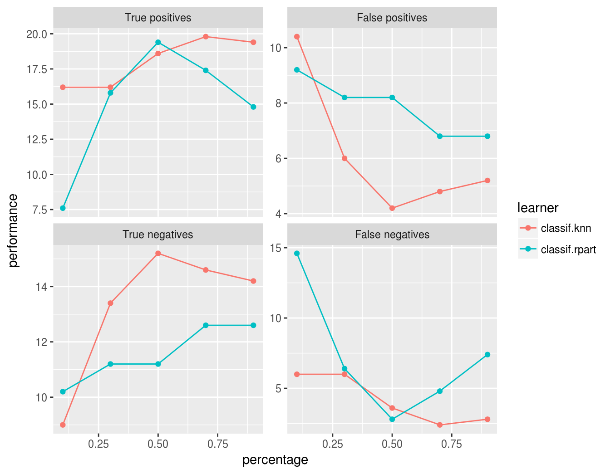
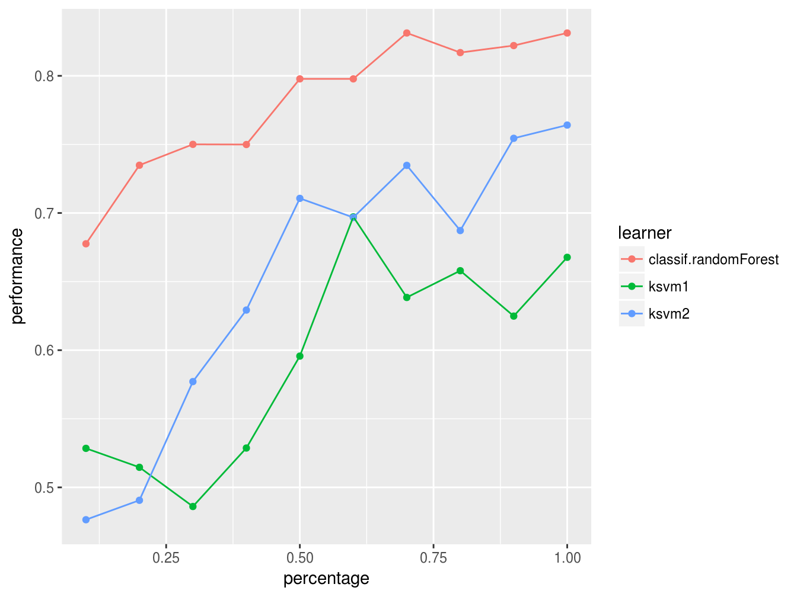
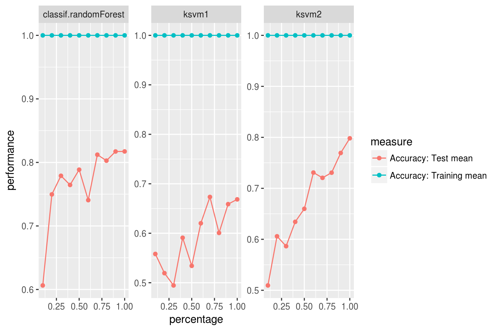

To analyze how the increase of observations in the training set improves the performance of a learner the learning curve is an appropriate visual tool. The experiment is conducted with an increasing subsample size and the performance is measured. In the plot the x-axis represents the relative subsample size whereas the y-axis represents the performance.
Note that this function internally uses [&benchmark] in combination with [&makeDownsampleWrapper], so for every run new observations are drawn. Thus the results are noisy. To reduce noise increase the number of resampling iterations. You can define the resampling method in the resampling argument of [&generateLearningCurveData]. It is also possible to pass a ResampleInstance (which is a result of [&makeResampleInstance]) to make resampling consistent for all passed learners and each step of increasing the number of observations.
The [%mlr] function [&generateLearningCurveData] can generate the data for learning curves for multiple learners and multiple performance measures at once. With [&plotLearningCurve] the result of [&generateLearningCurveData] can be plotted using [%ggplot2]. [&plotLearningCurve] has an argument facet which can be either "measure" or "learner". By default facet = "measure" and facetted subplots are created for each measure input to [&generateLearningCurveData]. If facet = "measure" learners are mapped to color, and vice versa.
r = generateLearningCurveData(
learners = c("classif.rpart", "classif.knn"),
task = sonar.task,
percs = seq(0.1, 1, by = 0.2),
measures = list(tp, fp, tn, fn),
resampling = makeResampleDesc(method = "CV", iters = 5),
show.info = FALSE)
plotLearningCurve(r)
What happens in [&generateLearningCurveData] is the following: Each learner will be internally wrapped in a DownsampleWrapper. To measure the performance at the first step of percs, say 0.1, first the data will be split into a training and a test set according to the given resampling strategy. Then a random sample containing 10% of the observations of the training set will be drawn and used to train the learner. The performance will be measured on the complete test set. These steps will be repeated as defined by the given resampling method and for each value of percs.
In the first example we simply passed a vector of learner names to [generateLearningCurveData]. As usual, you can also create the learners beforehand and provide a list of Learner objects, or even pass a mixed list of Learner objects and strings. Make sure that all learners have unique ids.
lrns = list(
makeLearner(cl = "classif.ksvm", id = "ksvm1", sigma = 0.2, C = 2),
makeLearner(cl = "classif.ksvm", id = "ksvm2", sigma = 0.1, C = 1),
"classif.randomForest"
)
rin = makeResampleDesc(method = "CV", iters = 5)
lc = generateLearningCurveData(learners = lrns, task = sonar.task,
percs = seq(0.1, 1, by = 0.1), measures = acc,
resampling = rin, show.info = FALSE)
plotLearningCurve(lc)
We can display performance on the train set as well as the test set:
rin2 = makeResampleDesc(method = "CV", iters = 5, predict = "both")
lc2 = generateLearningCurveData(learners = lrns, task = sonar.task,
percs = seq(0.1, 1, by = 0.1),
measures = list(acc, setAggregation(acc, train.mean)), resampling = rin2,
show.info = FALSE)
plotLearningCurve(lc2, facet = "learner")
There is also an experimental [%ggvis] plotting function, [&plotLearningCurveGGVIS]. Instead of the facet argument to [&plotLearningCurve] there is an argument interaction which plays a similar role. As subplots are not available in [%ggvis], measures or learners are mapped to an interactive sidebar which allows selection of the displayed measures or learners. The other feature is mapped to color.
plotLearningCurveGGVIS(lc2, interaction = "measure")
plotLearningCurveGGVIS(lc2, interaction = "learner")